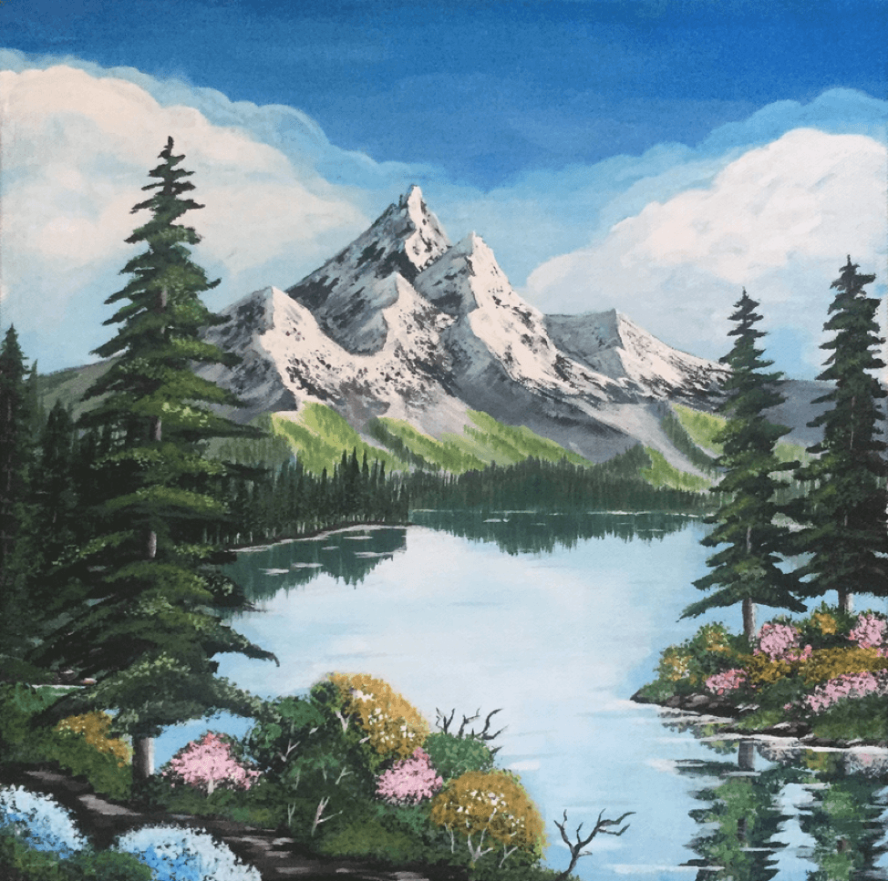
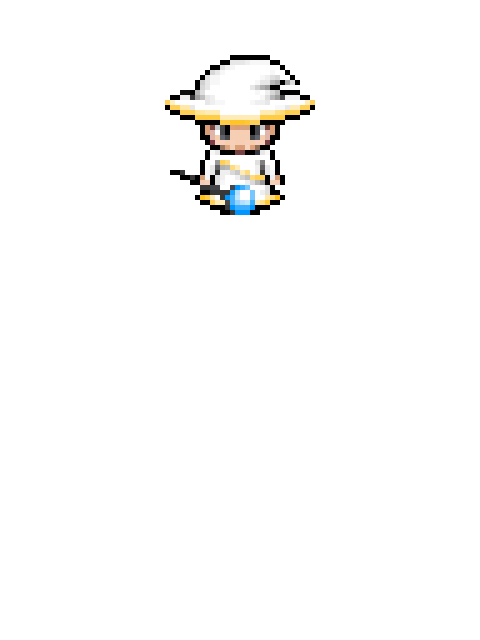

Gallery
A place for the little things that didn't make it onto a case study page.

Adventag Project
Informational poster that I created to describe the data analysis work done by my group for our client company, Adventag.

Happy Little Trees & Mountain
This acrylic painting was the end result of my first attempt at discovering The Joy of Painting with Bob Ross.

Wizard vs. Zombies
An retro-style, arcade action game that I worked on in Junior year at UIUC. I created the game's pixel sprites from scratch and wrote code to power the game's logic. In the game, the player defeats zombie hordes by controlling a laser-spewing wizard.
Homescape
Homescape is an interactive data visualization project that visualizes homes for sale in Pittsburgh. Each data point on the screen is a single home, and maps to multiple variables (color indicates size, shape size indicates actual home size, and shape represents type of home).